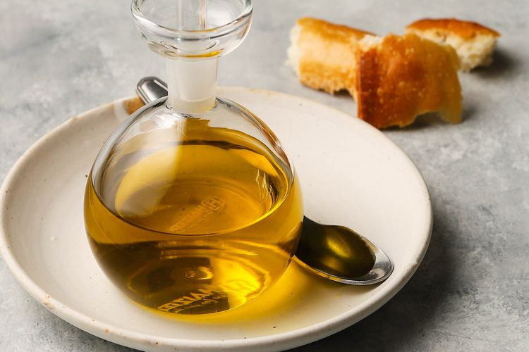

Cannabis-Infused Olive Oil Recipe

Before cannabis can be used in a recipe, it must be "activated" or, in a
technical sense, decarboxylated, to maximize its benefits. Traditionally,
decarbing meant heating the buds at a low temperature for two or three hours
in the oven. But this method can destroy flavor and lead to bitterness.
Thankfully, there's a better (and more delicos) way. Decarbing using the sous vide technique
eliminates the uneven and often harsh heat of the old-school method and preserves the fragrant, floral
compounds in cannabis known as terpenes. After decarbing, you'll gently infuse the cannabis in olive oil.
creating an aromatic ingredient that can be used in both sweet and savory recipes, from aglio e olio pasta
to chocolate pretzel cookies and a citrus- infused cake.
Ingredients
- 3 1/2grams cannabis flowe about 1/8 ounce
- 3 tablespoons distilled water
- 1 cup extra - virgin olive oil
Steps
-
Set the immersion circulator to 220°F and place in a medium saucepan filled halfway
with tap water. Grind the cannabis buds into small pieces and place in the vacuum-sealable bag with
the distilled water. Using the vacuum sealer, seal the bag completely.
-
When the circulator reaches 220°F, drop the sealed bag into the water and decarb for
30 minutes, rotating the bag every 5 to 10 minutes.
-
Transer the bad to a bowl of ice water to stop the cooking and to preserve the terpenes; let cool. Set a fine-mesh sieve over a bowl;
strin and reserve the cannabis, discarding the liquid. In a small saucepan, combine oil and cannabis and bring to a gentle simmer over medium heat;
continue to cook for 20 minutes, stirring often. Remove saucepan from the heat and let steep for 30 minutes more.
-
Strain the mixture through a fine-mesh sieve into a resealable heat-proof food container
with an airtight lid. Keep refrigerated and use within 30 days.
Links